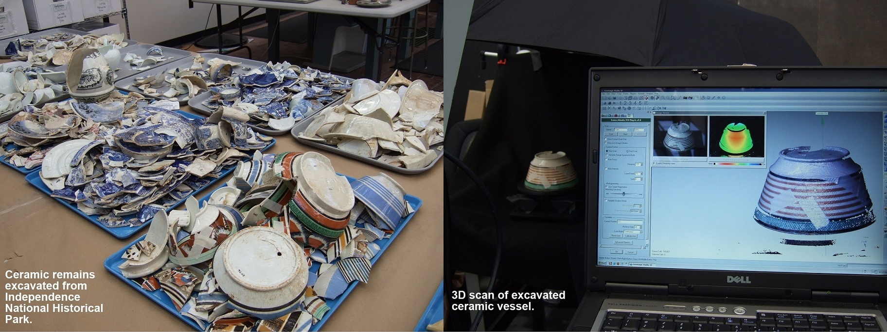
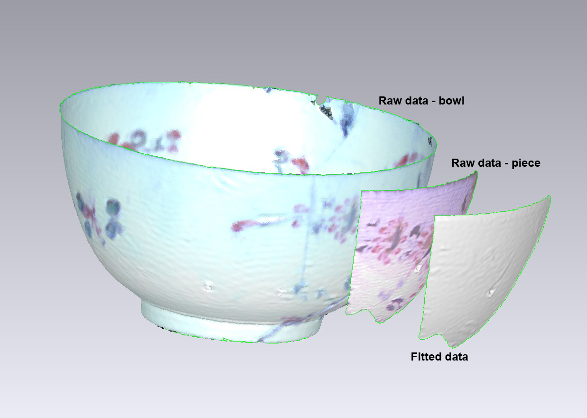
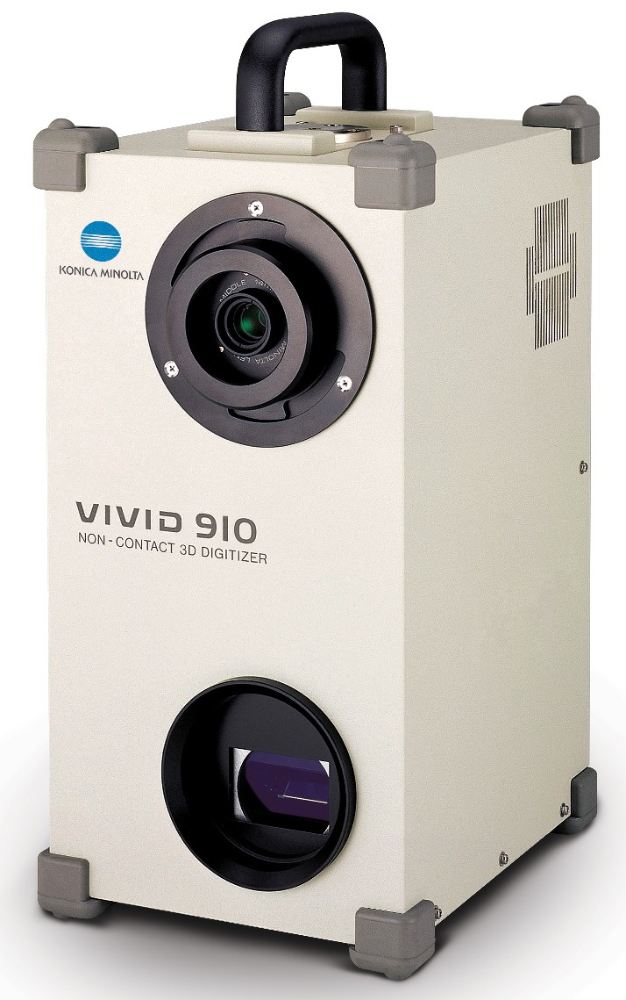
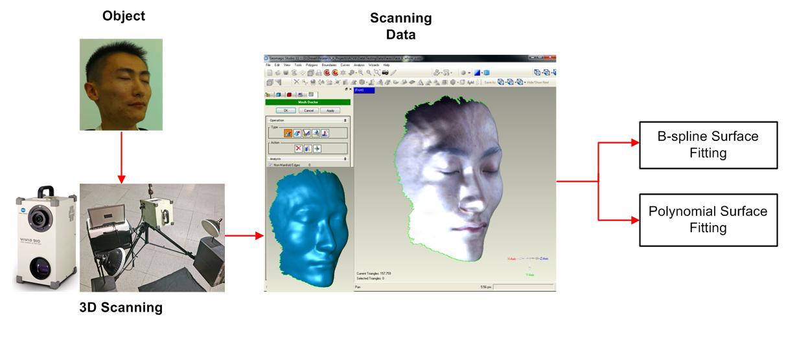

Research
Reseach Teaching Publications Classes Resume
Recent project - The 3D Colonial Philadelphia Project
The reconstruction of broken vessels - solving a 3D puzzle game. The mending of unearthed archeological ceramic shards to reconstruct vessels that the fragments once formed is currently a tedious and time-consuming process. Nevertheless, it is a vital step in interpreting archeological records and an important component in understanding and preserving cultural heritage. This paper presents a method to assist in the tedious process of reconstructing ceramic vessels from excavated fragments. Link to a 3D animation demo.Here is the movie of mending ceramic shards (313 pieces):


Previous research topics
Recent project - 3D surface features
Surface representation and recognition play an intrinsic role in many applications such as medical imaging, computer vision, and computer graphics. They are also important to a wide variety of applications including shape matching, face and object recognition, and shape measurement. Here are the diagram of face feature detection:  
|
{kind=link}
{kind=link}
{kind=link}
{kind=link}
{kind=link}
{kind=link}
{kind=link}